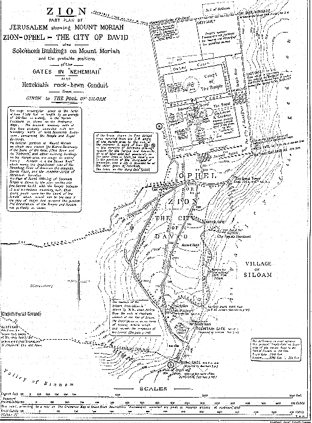
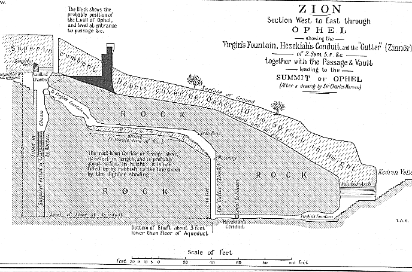
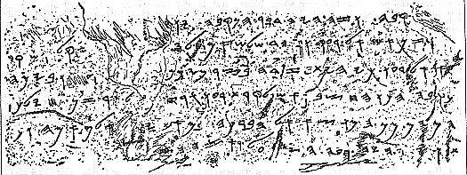
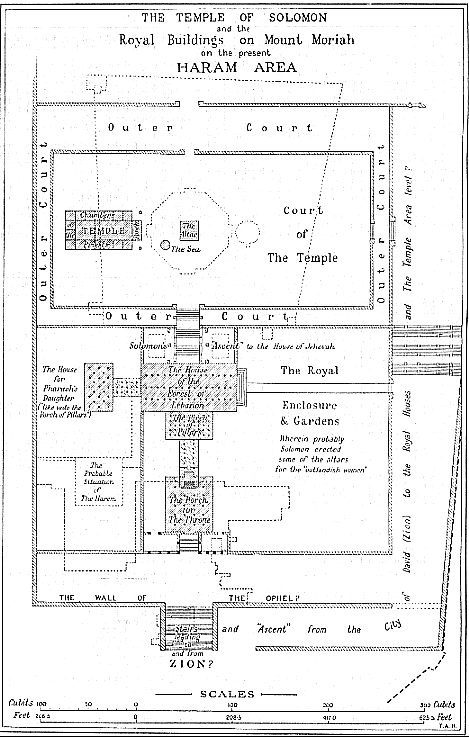

THAT Zion (Heb.) or Sion (Greek) was "the city of David" is clear from 2Sam. 5:7. That Ophel and Zion are equivalent names applied to the highest point of mound of the hill ridge running due south from Mount Moriah is now generally conceded. That Zion was the name of the original Jebusite fortress on this summit, almost directly above Gihon (now known as "the Virgin's Fount") is also accepted by the majority of the authorities on the topography of Jerusalem. It therefore becomes necessary to readjust some of the place-names which have been given to a Zion on the west side of Jerusalem on traditionary accounts (which, from the time of Josephus onwards, have located Zion on the south-western hill of the city), and to transfer them to a Zion south of Mount Moriah. This readjustment will transfer the name to the true site and satisfy the requirements of fulfilled prophecy; which declares that "Zion shall be ploughed as a field" (Jer. 26:18. Micah 3:12). This is true of the site now claimed for it; but is not wholly true of the traditional site on the south-west side of Jerusalem, which still has buildings upon it. The general plan on p. 100 is from the Ordnance Map of Jerusalem, from the survey by Sir Charles Wilson, and shows Moriah now occupied by the Haram ash Sharif, i.e. "The noble Sanctuary", which stands on its rectangular "platform" about the center of what is known as "the Haram area". This and the other more or less ancient and modern buildings on this area are shown in dotted lines on the plans. Immediately to the south lies the ridged hill on the summit or "swelling" of which stood the Jebusite fortress or citadel of Zion (or Ophel), from which the whole area immediately adjoining took its name, when captured by David, as "the city of David". Both name and title became in later times ascribed to the whole area of the city of Jerusalem. The key to a right understanding of the whole question concerning the correct location of Zion is undoubtedly the spring known in the O.T. as Gihon (the modern name being "the Virgin's Fount"), with its underground rock-hewn conduit constructed by Hezekiah to convey the waters of the Fount to the Pool of Siloam within the enclosing wall of the city (see plan, p. 100). Starting from the SE. angle of the "Haram area", this enclosing wall ran southward on the steep slope of the Zion of Ophel Hill, till it reached a point south of "the Old Pool" (Isa. 22:11). Thence, turning sharply almost due N., the wall was carried round the bottom of the western slope of the Zion Hill, and ran NE. till it reached the south-westerly end of Moriah, at the corner of the present "Haram area"; and thence due E. till it completed the circuit at the SE. corner of the Haram. The line of this wall is indicated on the plan (p. 100) by the thick dotted line (*1) thus - - - . (*1) On the plan (p. 100) a point is marked at the south end of the conduit,
as "Warren's Shaft". In his "Recovery of Jerusalem", Sir Charles Warren
tells us that "at 450 feet from the Siloam end ... we found a shaft leading
upwards apparently to the open air." This is of great importance as it
altars considerably the conjectured line of wall that is shown on the P.E.F.
plans as running due N. up the east slope of Ophel, from the great masonry dam
below the Old Pool. This shaft must have been within the city wall.
Therefore, as 450 feet from the exit at Siloam locates it as being beyond the
first bend in the serpentine course, of the conduit, the city wall must necessarily
have been carried up at least 100 feet nearer to the east, and probably in the
position it is shown in on the plan on p. 100.
 (page 100) The rock-hewn conduit from Gihon (or the Virgin's Fount) is shown with remarkable accuracy on the Ordnance Survey maps. If, as it is confidently asserted, Gihon (or the well-spring or Fount of the Virgin) is the only spring in the immediate vicinity of Jerusalem, then Melchizedek, King of Salem, and, later, the Jebusites, would be in possession of the only unfailing water-supply of the district. That the Jebusites had access to this well or spring from within their wall and fortress is clear : but, in the end, it proved their undoing, for David's men obtained possession of Jebus by means of the tzinnor (A.V. "gutter"), i.e. the channel and shaft leading from the well into their citadel. (See notes on 2Sam. 5:6-8 and 1Chron. 11:6; also the Section on p. 102). (*1) The spring is intermittent, overflowing periodically, thus pointing to the existence of either a natural chasm or reservoir, or a made reservoir, whose site is at the present unknown. Possibly it is under Mount Moriah itself. Tradition has much to say as to a deep well with an unfailing water-supply beneath the Temple area. (Cp. also Ps. 46:4.) (*2) The fortress or citadel of Zion was immediately above this well-spring, and its defenders could thus command their water-supply from within, and also the security of the source without. Before the time of Hezekiah, "the city of David" was dependent upon this source for its water-supply in times of danger threatened from without, in the same manner that the Jebusites were, viz. they descended from Ophel by means of rock-hewn passages, with steps and slopes (still in existence) till they reached the top of WARREN'S Shaft (see Section of David's tzinnor or "gutter", p. 102), and by means of buckets drew their water from the unfailing well-spring some 40 to 50 feet below. At the top of this shaft is still to be seen the iron ring employed for this purpose. (*1) This Section, by Sir Charles Warren's kind permission, is presented
W. to E. (and facing north), like the other plans on pp. 100 and 105, so as
not to confuse the reader. In the Section, as shown on p. 102, it must
be understood that the opening to the canal running south is thus shown by way
of accommodation.
 (page 102) The rock-hewn tunnel or conduit discovered by SIR CHARLES WARREN in 1867, and first mentioned by him, conveyed the overflow water (*1) from this spring to the Pool of Siloam. That this conduit and pool were made by Hezekiah is now considered certain from the inscription found in the tunnel itself (see the plan on p. 100). Hezekiah, before the Assyrian invasion, in 603 B.C. (see Ap. 50. V, p. 60), constructed this tunnel and brought the water from Gihon to a new pool (above "the Old Pool" of Isa. 22:11) that he had made for the purpose (2Kings 20:20). This pool henceforth became known as "the King's Pool" (Neh. 2:14). When the Assyrian army approached, Hezekiah "stopped the waters of the fountains which were without the city" (2Chron. 32:3-5), i.e. he concealed their extra-mural approaches and outlets. THE SILOAM INSCRIPTION, discovered in 1880, on a stone on the right wall of the tunnel about 20 feet from its exit into the Pool of Siloam, is undoubtedly the work of Hezekiah (see plate, p. 103). An interesting fact with regard to this inscription is that it gives the length of the conduit in cubits, which, being compared with modern measurements in English feet, shows that the cubit used was 17.5 inches or thereabouts. If we knew for certain that the exact points from which Hezekiah measured exactly corresponded with those of the moderns, them we should be able to settle the vexed question as to the length of the cubit used, at all events in secular matters, by King Hezekiah. We do not, of course, know this, but it is of great interest to note the fact that the Inscription's 1,200 cubits, and the latest measurement of (about) 1,750 English feet yield a cubit of 17.5 inches (*2). (*1) Before Hezekiah's time the overflow water must have escaped from
the Virgin's Fount at a lower level than is now possible, and flowed out and
down the lower end of the Kidron valley, past the king's garden, probably being
the feeder for Joab's well (En-rogel?). According to The Companion Bible Chronology (see Ap. 50 and 86) the date of this Inscription (see § III, pp. 101, 102) is given as 608-7 B.C. for the following reasons. The fall of Samaria was in 611 B.C. Hezekiah, fore-seeing that Judah's turn would follow, started the work of making the "Pool" and the "conduit" of 2Kings 20:20. This difficult undertaking would probably occupy two or three years. When the siege of Jerusalem by Sennacherib was begun in Hezekiah's fourteenth year, this water-supply was complete and in working order, as Hezekiah had stopped the extra-mural outlets (2Chron. 32:2-4). Therefore, the rock-hewn conduit from Gihon (now known as "the Virgin's Fountain") to Siloam must have been constructed between Hezekiah's sixth and fourteenth years (611-603 B.C.). If we assume that it was begun soon after the fall of Samaria and occupied three years in construction, and that the Inscription was made on completion, as the record itself indicates, this gives us the date (above) 608-7 B.C. It is graven in ancient Hebrew characters, similar to those of the Moabite Stone (see Ap. 54); and occupies six lines; the translation of which is given below.  TRANSLATION OF THE SILOAM INSCRIPTION. Line 1. [Behold] the excavation. Now this is the history of the
breaking through. While the workman were still lifting up The Plan on p. 105 shows the various buildings on the Temple area on the Moriah site to a larger scale. No attempt is made either to "design afresh" or, with the ready and often disastrous zeal of the modern iconoclast, to "restore" Solomon's Temple in this plan. The efforts put forth in the majority of cases by those who, with the best intentions, set forth their "ideas", result in melancholy exhibitions, from the crudely unhappy delineations of the earnest student, who works in entire ignorance of scales of measurement or the simplest requirements of the builder's art, to the redundantly fanciful productions of the professional designer, who, by his very acquaintance with the requirements of architecture, is often led to try and set before us what he imagines the Temple of Solomon, &c., ought to be. Accordingly, we have on the one hand bald representations of a Temple of practical impossibility, or, on the other, the most elaborate architectural confections from all sorts of sources -- Phoenician, Egyptian, Grecian, Roman, and even Gothic. Not content with these "styles" of architecture for Solomon's Temple, it is not unusual for illustrators of this subject to import into their designs all the details they can possibly assimilate from the specification of the Millennial Temple given by Ezekiel, and to add these on to the meager details given of the Temple of Solomon! One moment's serious attention to David's solemn statement in 1Chron. 28:12, 19, that he had received direct instruction from Jehovah for "the pattern of all that he had by the Spirit", and "in writing" -- in other words, both model and specification from on High -- ought to preserve us from such mistakes. The Temple was built from a heavenly plan and specification, and there is an entire absence of every detail that would enable us to "restore" such a building. Just as, in the case of the Tabernacle, the essential details are omitted, so that men may not copy the Mishkan (or habitation) of Jehovah, so, in the case of Solomon's Temple, we are placed in the same position. The plan therefore given on p. 105 deals mainly with the figures given in the sacred records in bulk, merely arranging the various buildings in accordance with the position of the altar of burnt offering and the Temple in relation thereto. The Altar of Burnt Offering is shown on the site of the "Sacred Stone", which is exactly under the center of the present Moslem Sanctuary over it, know as "the Dome of the Rock". (*1) This is the traditional site of David's altar on "the threshing-floor of Araunah the Jebusite". The Temple with its porch, the twin pillars Jachin and Boaz, and the molten sea, are shown to the west of the altar, and the wide open space, the Court of the Temple, is left blank -- for the best of all reasons : we have no revelation as to how the space was occupied. Josephus and the Jewish rabbinical writings are alike useless for the purpose of informing us about Solomon's Temple. The simple fact is that we know next to nothing, and beyond the statements of "block" measurements, so to speak, we have no guide as to details. That there was an inner and outer court to the Temple is most probably, although there is no mention of courts until a later date. (*1) This and the other main buildings on Haram area are shown on the plans by dotted lines.
 With regard to these the case is different. We are not told that David or Solomon received a Divine plan and specification for "the house of the forest of Lebanon", &c. Therefore it is permissible to try and arrange these buildings, according to the very slight details given, and according to the dictates of common sense. It seems to be forgotten by some modern "Restorers" of Solomon's house, and other buildings, that the great king had received specially the gift of "wisdom". He was a man with "a wise and understanding heart", so that there was none like him before and after. Therefore he would not have fallen into the mistakes of palace building with which he is credited by some writers. (*1) Solomon's house was built of wood from the "forest of Lebanon", or, as we should say "of Lebanon wood". It was 100 cubits long, 50 cubits broad, and 30 cubits in height. Although the number of cedar pillars is given, it is impossible to do more than indicate them on the plan by number. No details as to arrangement are given. The same remark applies to the Porch of Pillars, which apparently was a magnificent portico, to the house itself, and also to the statements concerning the Porch of Judgment. The gross dimensions are given of "the Porch of Pillars" (50 cubits by 30 cubits) and that is all; and we are told that "the house of Pharaoh's daughter" was like unto this porch. This probably means 50 cubits by 30 cubits, as shown on the plan. Apart from this, all is left unspecified and vague. (*1) e.g. Prof. STADE in his Geschichte des Volkes Israel, gives
an elaborate plan, which has been reproduced in one of the latest and most important
works on Jerusalem. It is, however, completely at variance with the Scripture
record. This plan makes havoc of the Bible statements as to the royal
buildings, for it shows (1) The King's House, (2) The House of the Forest of
Lebanon, (3) Hall of Pillars, (4) The Throne Hall, (5) House of Pharaoh's Daughter
-- whereas the Hebrew text of 1Kings 7:1-8 plainly records the fact that Solomon's
House and the House of the Forset of Lebanon were one. This
house had a "Porch of Pillars", probably to the south, and also, probably, south
again, lay the Porch of Judgment, where Solomon sat to administer justice.
This, as shown on p. 105, was situated in a position easy of access from "the
city of David" -- for the people's sake 00 and at a sufficient distance
from the royal residence for the monarch's own sake. Solomon was a gentleman
as well as a king, and it is incredible that he would have allowed the populace
admission to the Judgment Hall through his own private grounds. The House
for Pharaoh's daughter completes the buildings specified, although
an extensive Harem must have been added later on. This ascent, by which Solomon went up to the house of Jehovah, would be between the house and the outer court of the Temple, and would probably comprise two or three flights of steps or "stairs", protected by another covered portico or "porch", with pillars in accordance with the other buildings. The Temple area level would probably be some 15 or 20 feet above that of the king's house, and this difference in level would admit of the construction of an "ascent" that must have possessed features of unusual interest and magnificence from the account given of the visit of the Queen of Sheba (2Kings 10:1-10; 2Chron. 9:1-12). To reach the level of the present Haram area at the south side from "the city of David", some means of easy ascent must have been employed. This is shown on the plan, p. 105, as being by a series of steps -- forming an important stairway, giving direct means of approach to a spacious plateau on to which opened out the south end of the Judgment Hall or Porch. This would afford direct access to the people to the Hall for Judgment concerning their disputes, &c. In addition to this great stairway for the people, there must also have been
an easy way of "going up" from "the city of David" to the Temple area.
This would probably be by means of an inclined ascent, such as that indicated
on the plan (p. 105). It must be remembered that this would also be requisite
for a roadway for the king's chariots, &c. The evidence is abundant
that Solomon had a number of horses and chariots. These would hardly have
been installed on the Haram area level, in juxtaposition with the royal buildings.
The fact that beneath the SE. corner of the Haram is still to be seen
the great underground series of pillars and arches known as "Solomon's stables",
gives strength to the suggestion that the originals of these and the "Horse
Gate" were in very close proximity. (See plan, p. 100.) On the plan (p. 100 is shown in dotted lines a large drain, running round the SW. angle of the Haram, to its exit at the extreme S. point of "the city of David" (Zion). This drain is of very great importance with regard to the question of locating the "Dung Gate" of Nehemiah. In all probability this drain indicates the position of the "main-drainage system" of the Temple area, and the adjacent royal buildings, from the time of Solomon and onwards. Ample provision must have been made in buildings of the character and extent of the Temple and palace for the disposal of the blood of the sacrificial animals and the water of the ceremonial cleansings, in addition to the sewage from the Levitical quarters, and the huge court entourage of Solomon (*1) and possibly some of the later kings. For this purpose a great drain must have been employed to convey all this sewage matter to the lower levels and outside the city. The fact that the remains of such a large drain or sewer are still in existence in much the position necessitated by the buildings on the Temple area, &c., suggests that this was either the one constructed by Solomon, or else one laid down on about the same lines at a later date (*2). As shown by the latest Palestine Exploration Fund plan of Jerusalem, this drain runs S. down the slope of the Tyropoeon valley, past the Pool of Siloam (the King's Pool, Neh. 2:14), and passes out under an ancient gateway, recently discovered, to the south of "the Old Pool" (Isa. 22:11). In all likelihood this gateway marks the position (there or thereabouts) or Nehemiah's "DUNG GATE". It would be so named from its close association with -- as we should say now -- the sewage outfall, as the drain (still existing here) passed out beneath it, to discharge itself a little lower down into the gully formed by the junction of the Kidron and Hinnom Valleys, and not far distant from the ridge site identified by some as Aceldama. That this is the case receives strong confirmation from the fact that this sewer or drain passes under the present south wall of Jerusalem in close proximity to the existing gate there, which still bears the Arabic name of Bab al Magharibe or the Dung Gate. The difference in present levels from the SW. corner of the Haram to the "Dung Gate" (at the south of Zion), and shown on the plan, p. 100 A - B, is 300 feet. This is a fall admirably suited for the purposes such a drain would have to fulfill. This being so, it supplies the key to unlock the difficulties relating to the location of the rest of the gates of Nehemiah. The VALLEY GATE, from whence Nehemiah issued on his night inspection tour (C.2), and from whence the two processions started E. and N. at the Dedication of the Wall (C.12), is seen to be on the slope of the SW. hill. Recent explorations have revealed an ancient gateway in the position shown on the plan (p. 100). The DUNG GATE being thus located at the extreme south of "the city of David", the next, or "Fountain Gate", is shown in close proximity to the site near which the "Stairs of David", leading up into the higher portion of the city of David, must undoubtedly have existed. The WATER GATE is shown close to where and existing road now runs to Gihon; and the other gates follow on in orderly sequence till the SHEEP GATE is reached on the north of the Temple area, and close to the pool now identified as the Pool of Bethesda "by the Sheep Gate" (John 5:2, marg.). This opened out probably into the large enclosure shown on the plan (p. 105) necessary for the reception and feeding of the vast numbers of sacrificial animals. The PRISON GATE (or Gate of the Guard more probably) would be near the extreme NW. angle of the Temple area, and would be connected with the barracks or quarters of the Temple guard (from whence its name). It was at this gate, Nehemiah tells up, the procession which started N. from the Valley Gate, at the dedication of the wall, "stood still", either to give the other company time to reach the same point, or else to allow the other, the priestly company under Ezra (Neh. 12:36), to precede Nehemiah and the other lay "rulers" into the House of God for the general thanksgiving (12:40). (*1) The occupants of the Harem, and their attendants alone, would
probably number at least 2,000.
|